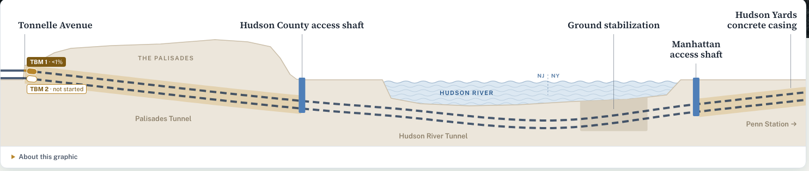

Route Tonnelle Ave → Penn Station

Cameras Latest stills · click a camera for its page
Construction packages Active and complete
| Package | Contractor | Jobs supported | Budget |
|---|
Budget = board-approved Market Case Estimate, including contingency. Jobs = full-time-equivalent jobs supported over the contract (GDC economic model, Jan 2026), not current headcount.
Paying for the tunnel $16B budget
Who pays
Federal grants so far
$1.11B paidfor work already done
$4.26B releasedavailable, not yet paid
$5.63B to comepromised in signed agreements, released year by year
Federal payments by month
to GDC for the tunnelto Amtrak for the Hudson Yards casing
GDC pays contractors first and the federal government reimburses it, so payments trail work by about a month. Federal grant data is from USAspending.gov through Aug 2026. The states' and Amtrak's payments aren't published monthly.
Latest photos
Layout study v3.